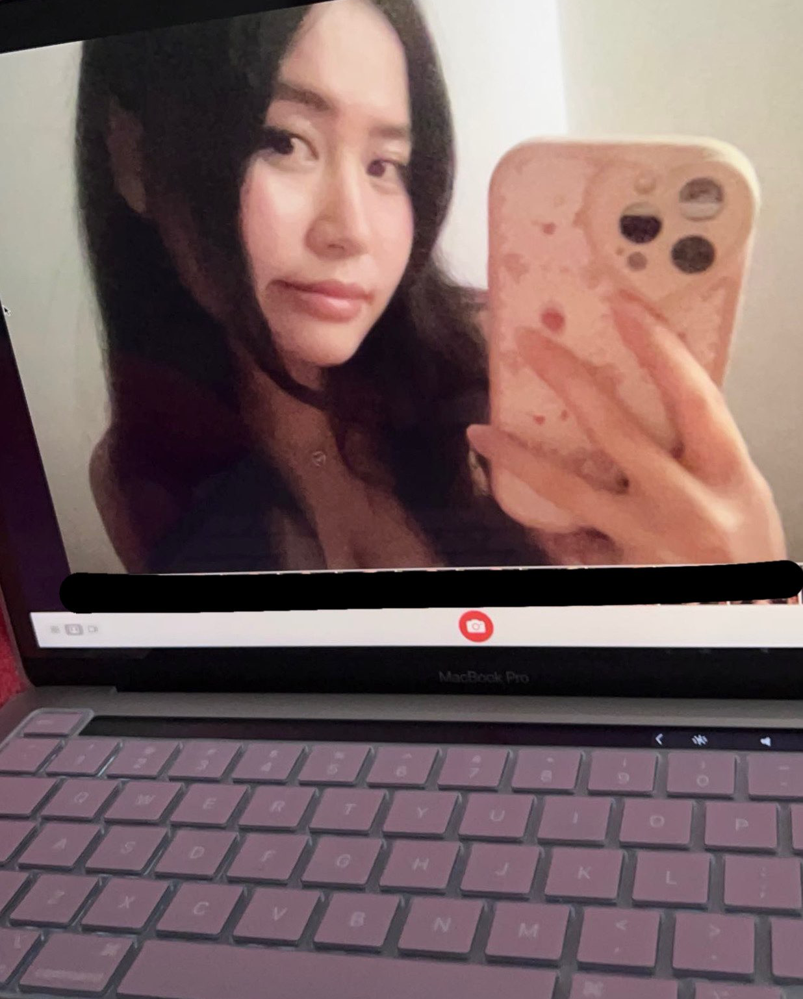
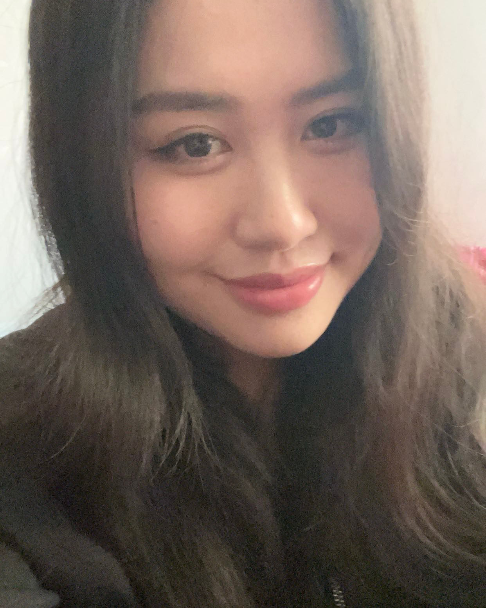
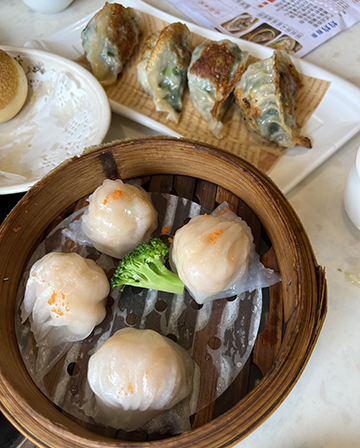

hello! welcome to jing's site. she was born on october 21, 2002 in guangzhou, china before moving to the united states at a young age. her family did not speak any english so it was hard. she is an only-child but always wondered how it would be like if she had a sibling.

jing was planning to go the pre-med route and become a doctor. however, she started to think about what makes her happy. from a young age, she always had interest in art and design but was told she would not make much money so she turned away from it.

during the weekends, jing spends time with her parents such as going out to eat dimsum. she also naps a lot. especially when she gets home from her classes in the morning because she does not sleep very well. she also goes to the library often.
